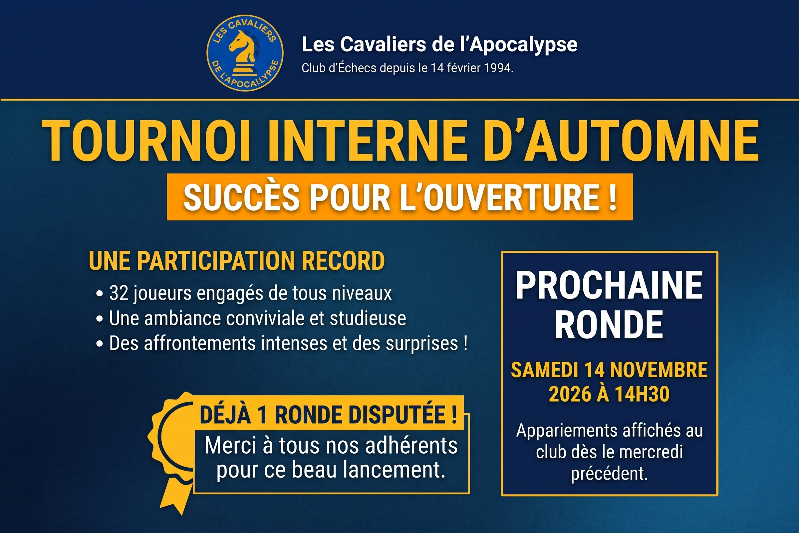

Succès retentissant pour l'ouverture du Tournoi Interne d'Automne

Ce samedi 26 octobre 2026, la salle principale de l'Espace Associatif d'Angers affichait comble à l'occasion de la ronde inaugurale du Tournoi Interne d'Automne. Entre duels fratricides au sommet, défense héroïque des favoris et coup d'éclat de nos jeunes espoirs, retour complet sur un après-midi qui lance idéalement la saison sportive du club.
Une affluence record et une ambiance solennelle
Dès 13h30, l'effervescence était palpable dans les allées du club. Les organisateurs ont enregistré une participation historique de 32 joueurs inscrits, rassemblant toutes les générations : des jeunes pousses disputant leur premier tournoi officiel en cadence lente jusqu'aux piliers chevronnés du club. Le tournoi se déroule sous la formule éprouvée du système suisse en 5 rondes, à la cadence classique exigeante de 50 minutes assorties d'un incrément de 10 secondes par coup (cadence officielle homologuée FFE).
À 14h00 précises, après le traditionnel rappel des règles de convivialité et d'arbitrage par notre maître-entraîneur Dean Stosic, le silence le plus strict s'est abattu sur la salle, à peine rythmé par les déclenchements feutrés des pendules électroniques DGT.
Table 1 : Gerald Darbellay sous pression mais impérial
Tous les regards étaient naturellement braqués sur le premier échiquier, où le numéro un incontesté du club, Gerald Darbellay (2065 Elo), affrontait un Pierre Balter (1730 Elo) particulièrement décomplexé. Avec les pièces blanches, Pierre a opté pour une agressive Attaque Est-Indienne, n'hésitant pas à pousser ses pions à l'aile roi dès l'ouverture pour déstabiliser le champion.
Face à cette tempête tactique, Gerald a fait parler son immense expérience de vétéran. Avec un calme olympien, il a paré chaque menace directe avant d'amorcer une contre-attaque chirurgicale au centre par 27... d5!. La transition vers une finale de tours a tourné court : Gerald convertit son avantage matériel avec une précision de métronome pour s'imposer en 42 coups.
La sensation du jour : l'exploit tactique de Jules Alboukai
Si la logique des classements Elo a été globalement respectée sur les autres premières tables — avec des victoires nettes de Thomas Lambert (1979 Elo) sur une Défense Sicilienne et de Matteo Grolleau (1882 Elo, 1998 Rapide) grâce à une attaque éclair sur le roque —, le chef-d'œuvre de l'après-midi a été signé par le jeune cadet Jules Alboukai (1678 Elo).
Opposé au solide vétéran Anthony Leost (1614 Elo), Jules semblait pourtant promis à la défaite après la perte d'un pion clé dans une finale complexe. C'est à cet instant précis que le jeune prodige a trouvé une ressource extraordinaire : un sacrifice de tour sur la septième rangée (34. Txg7+!), forçant une répétition de coups et un échec perpétuel imparable. Une nulle héroïque saluée par les applaudissements chaleureux de tous les membres présents.
Récapitulatif des résultats clés (Ronde 1)
| Échiquier | Blancs | Noirs | Résultat |
|---|---|---|---|
| Table 1 | Pierre Balter (1730) | Gerald Darbellay (2065) | 0 - 1 |
| Table 2 | Thomas Lambert (1979) | Laurent Barre (1593) | 1 - 0 |
| Table 3 | Stephane Daviet (1723) | Matteo Grolleau (1882) | 0 - 1 |
| Table 4 | Anthony Leost (1614) | Jules Alboukai (1678) | ½ - ½ |
Analyses collectives et convivialité au buffet
Fidèle aux valeurs de transmission qui animent Les Cavaliers de l'Apocalypse depuis 1994, la compétition a cédé la place à la camaraderie dès les dernières pendules arrêtées. Autour du traditionnel buffet de l'amitié, Dean Stosic et Emmanuel Grolleau ont réuni les participants autour de l'échiquier mural pour décortiquer les moments charnières de chaque partie, corriger les erreurs de calcul et partager les subtilités théoriques des finales.
Rendez-vous officiel pour la Ronde 2
La deuxième ronde du Tournoi d'Automne se disputera le samedi 14 novembre 2026 à 14h30. Les appariements officiels selon le système suisse seront affichés à la salle du club et transmis par courriel dès le mercredi 11 novembre. Pour toute information : lescavaliers@notremail.com.
Sources & mentions :
- Rédaction & visuels : Textes et illustrations élaborés avec l'assistance d'une IA.
- Données sportives : Données réelles issues des licenciés officiels du club (FFE).
- Fédération Française des Échecs (FFE)
- Règles officielles du jeu d'échecs (FIDE)